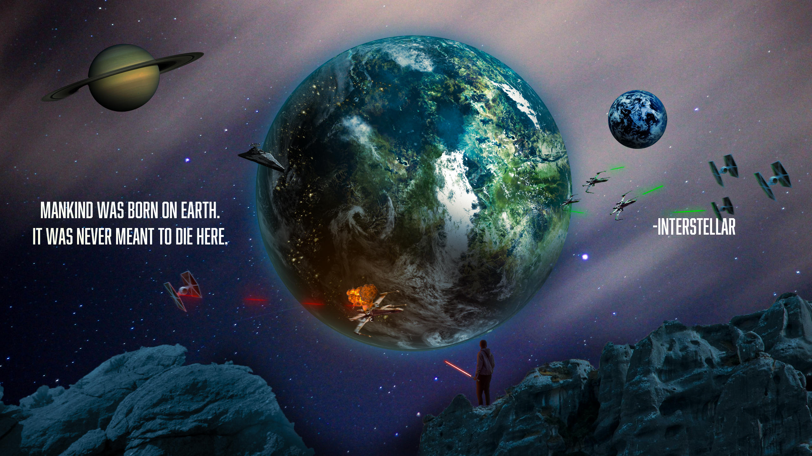
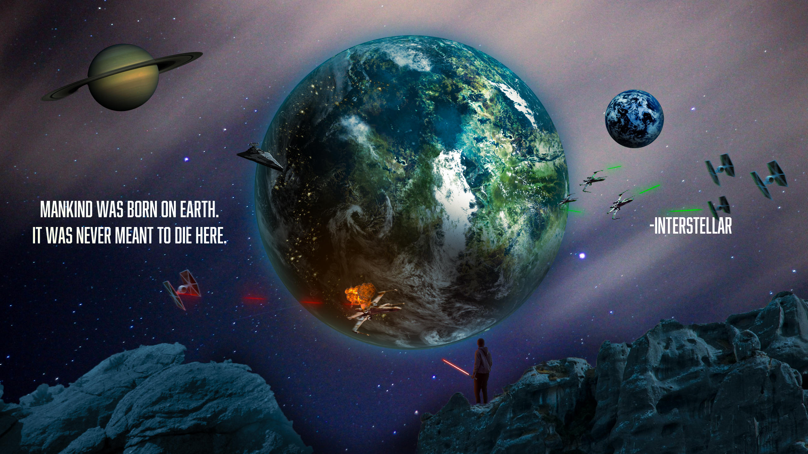

WELCOME!
Who am I?
Hi there! I'm Dries, a passionate student exploring the exciting world of design. Based in Mechelen, Belgium, I'm currently in my final year of secondary school, where I'm diving into creative and technical skills like web development, design, and content creation. When I'm not coding or designing, you'll probably find me brainstorming ideas, learning new skills, or working on my next big challenge.
My Projects
 
